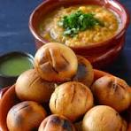

Litti Chokha

A rustic Bihari delicacy made with roasted wheat balls stuffed with spiced
gram flour, served with mashed veggies.
Ingredients:
- Wheat flour
- Sattu (roasted gram flour)
- Garlic, ginger, green chilies
- Pickle masala
- Mustard oil
- Brinjal, tomatoes, boiled potatoes
- Spices and salt
Instructions:
- Prepare dough and stuff with sattu masala mixture.
- Roast on coal or bake until browned and smoky.
- Chokha: Roast veggies, mash with mustard oil, garlic, and spices.
- Serve litti hot with chokha and extra ghee.